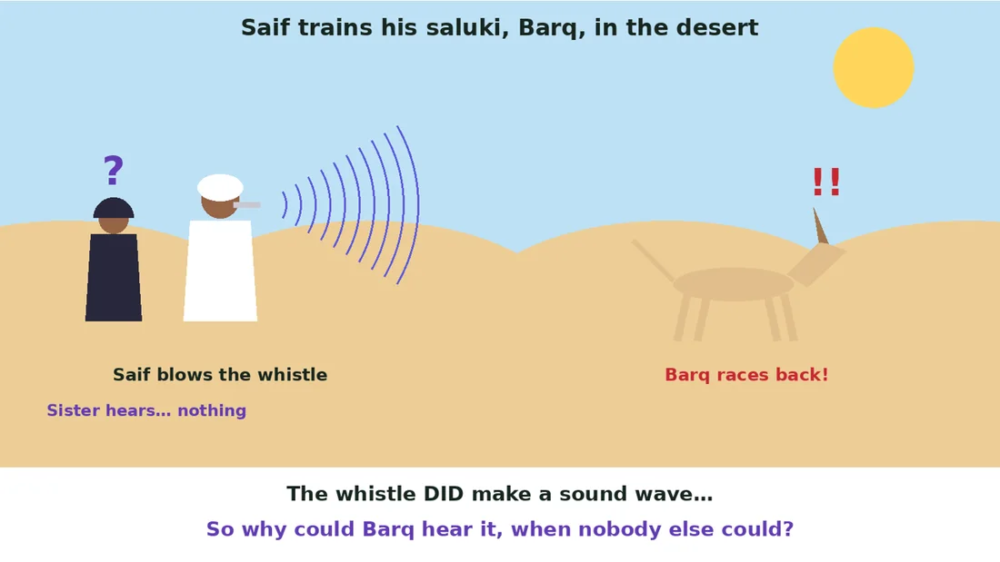
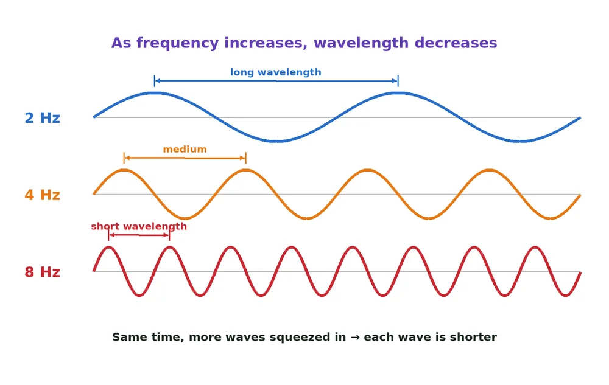
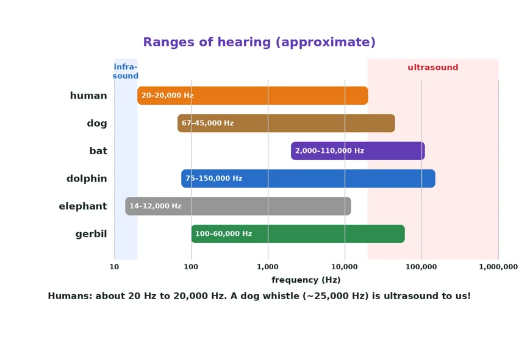
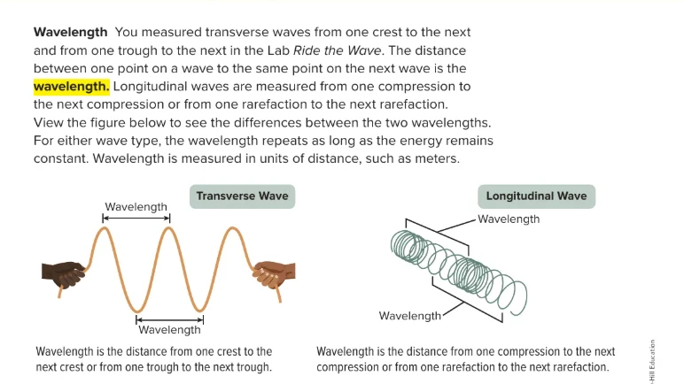
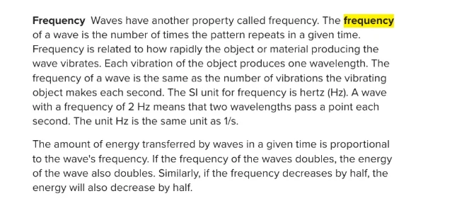
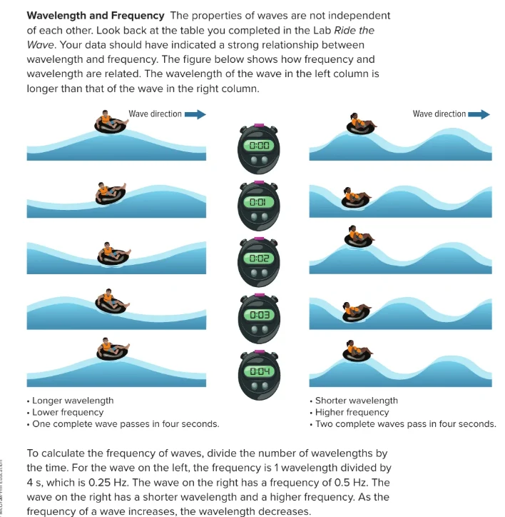
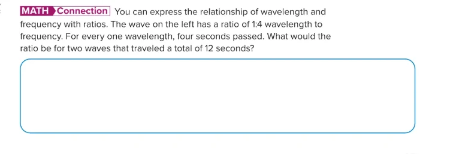
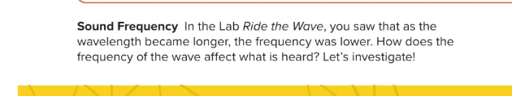
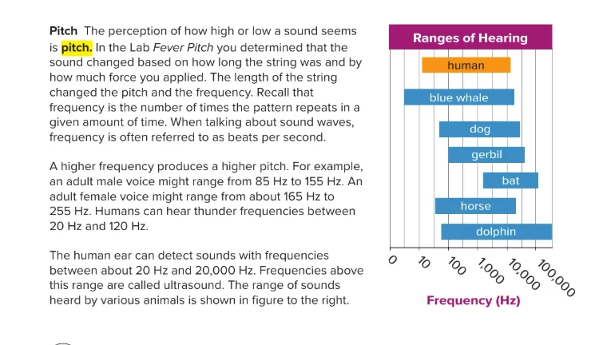

Wavelength, Frequency & Pitch
Lesson 1 · Wave Properties
Term 1 at a glance
Grade 8 Advanced Science · We are in Unit 1, Module 2: Introduction to Waves.

Meet your UAE Values Team
Five friends will coach you through today's wavelength and pitch mission. Tap a character to discover their job today!
Lesson map · 45 minutes · tap any activity
Objectives, success criteria & key words
Describe wavelength and frequency, explain that as frequency increases wavelength decreases, and relate the frequency of a sound wave to its pitch and to the ranges of hearing.
- I can measure wavelength from crest to crest, trough to trough, or compression to compression.
- I can calculate frequency in hertz (Hz) as the number of waves ÷ time.
- I can explain that as the frequency of a wave increases, its wavelength decreases.
- I can explain that a higher frequency gives a higher pitch, and compare ranges of hearing.
Kickoff: starter + attendance

- Say “present” and settle in your seat.
- Think: why does a thin oud string sound higher than a thick one?
- Answer the 5 true/false questions on the next slide on your own: no peeking at a friend's answer!
Pre-assessment: what do you know?
Hook: the silent whistle mystery

A winter morning in the Al Marmoom desert…
Saif is training his saluki, Barq. He blows a small silver whistle. Then… silence.
His sister hears nothing at all, but Barq's ears shoot up and he races straight back to Saif.
The whistle definitely made a sound wave. So why could only Barq hear it?

Watch: wavelength, frequency and pitch (2.5 min)
Encounter: high or low pitch?
Tap a sound to sort it by pitch (tap again to change), then check with your partner.

Pitch is not loudness: a quiet mosquito is high-pitched; a loud drum is low-pitched.
Frequency (the unconventional version)
Think of passengers going through the gates at a Dubai Metro station. How many pass each second is the frequency. The gap between one passenger and the next is like the wavelength. Squeeze them closer together, and more pass each second!
The frequency of a wave is the number of waves passing a point each second (Hz).
Textbook: what is wavelength?

Textbook: what is frequency?

Textbook: wavelength and frequency

Textbook: maths connection

Textbook: sound frequency

Textbook: pitch and ranges of hearing

The Zayed Sports City wave: slow vs fast
Frequency in ripples
The frequency of a wave equals the number of vibrations the source makes each second. More vibrations per second = a shorter wavelength and a higher pitch.
A small, tight drum skin vibrates fast (high pitch); a big, loose one vibrates slowly (low pitch). Think of the drums at an Al Ayyala performance on National Day.
Pitch in any medium
A sound wave keeps the same frequency, and so the same pitch, in every medium. Tap Send: a whistle sounds just as high in water or air, but in a vacuum there is no sound at all.
Solid
Liquid
Gas (air)
Vacuum
Spring lab: wavelength vs frequency
- Lay the spring on the floor next to the tape marks.
- Holder: keep one end still. Shaker: move the other end side to side steadily for 10 s.
- Observer: count the waves made in 10 s and measure one wavelength.
- Repeat with a slow then a fast shake. Record below.
| Shake | Wavelength | Frequency (waves ÷ time) |
|---|---|---|
| Slow shake | Long (crests far apart) | Low: e.g. 5 waves ÷ 10 s = 0.5 Hz |
| Fast shake | Short (crests close together) | High: e.g. 20 waves ÷ 10 s = 2 Hz |
Pause and check
Formative check: tap an answer. Wrong? Read the hint and try again!
Put the whistle events in order
Say the order with your partner, then tap the events from first to last. Tap a numbered event to undo.
Frequency worksheet (1/2)
B. Sound above about 20,000 Hz
C. Distance from one crest to the next
D. The unit of frequency
E. How high or low a sound seems
Frequency worksheet (2/2)
| Example | Frequency | Pitch |
|---|---|---|
| A mosquito buzzing near your ear | ||
| A ship's horn at Jebel Ali Port | ||
| A thin oud string being plucked |
Why could Barq hear the whistle when people could not? Use frequency, pitch and hearing range.
✓ The whistle made a sound with a very high frequency (above 20,000 Hz).
✓ A very high frequency means a very high pitch (ultrasound).
✓ It is outside the human hearing range (20–20,000 Hz) but inside a dog's range, so only Barq heard it.
Green, orange or purple? Choose your level
Green · Support
- Complete: “Frequency is measured in ____.”
- Circle: a thin oud string has a higher / lower pitch.
- True or false: wavelength can be measured from crest to crest.
- Higher pitch: a mosquito or a ship's horn?
1. hertz (Hz)
2. higher
3. True
4. a mosquito
Orange · At level
- Draw a low- and a high-frequency wave over the same time. Label one wavelength on each.
- A spring makes 30 waves in 10 s. What is its frequency?
- Why does a thick oud string sound lower than a thin one?
1. The high-frequency wave has more crests in the same width, so each wavelength is shorter.
2. 30 ÷ 10 = 3 Hz.
3. It vibrates more slowly: lower frequency, longer wavelength, so a lower pitch.
Purple · Challenge
- Textbook ratio: 1 wave every 4 s is 1:4. What is the ratio for 2 waves in 12 s? What is the frequency?
- Dolphins in UAE waters use ultrasound up to about 150,000 Hz. Why can't divers hear it?
- Design a test: does a shorter string give a higher pitch? What do you change, keep the same and measure?
1. 2:12 = 1:6, so 1 wave every 6 s. Frequency = 1 ÷ 6 ≈ 0.17 Hz.
2. It is far above 20,000 Hz, the top of the human hearing range, so our ears cannot detect it.
3. Change: string length. Keep: string type, tightness, how you pluck. Measure: frequency with a tuner app, 3 times each.
Summative: Wave Master quiz
Mystery solved!
The tiny whistle made the air vibrate extremely fast: a very high FREQUENCY with a very short wavelength. That gave a very high PITCH: above 20,000 Hz, outside the human HEARING RANGE, but inside a dog's range, which reaches about 45,000 Hz. So Barq heard it, and his family did not!
I can measure wavelength from crest to crest, trough to trough, or compression to compression.
I can calculate frequency in hertz (Hz) as the number of waves ÷ time.
I can explain that as the frequency of a wave increases, its wavelength decreases.
I can explain that a higher frequency gives a higher pitch, and compare ranges of hearing.
Which value did you show today?
Tap the character whose value you showed in this lesson. Then tell your partner one real example!
Tune in to your future
Every voice has its own frequency. Find yours, raise it high and make the UAE proud!